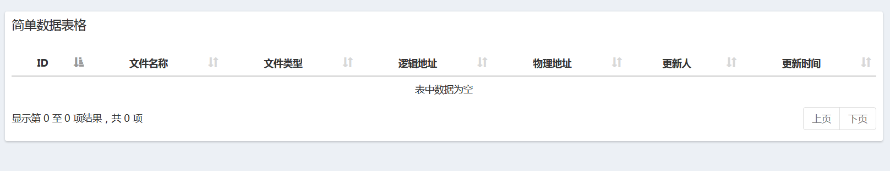
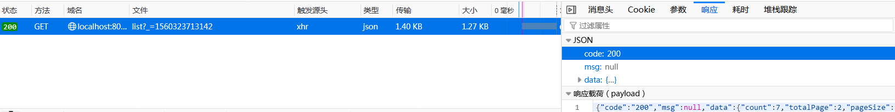
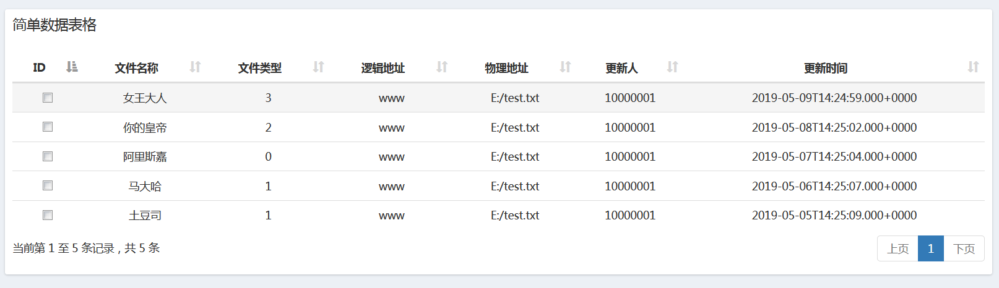
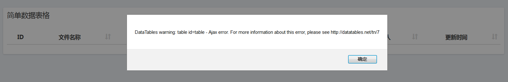
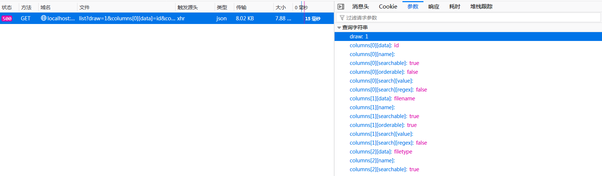
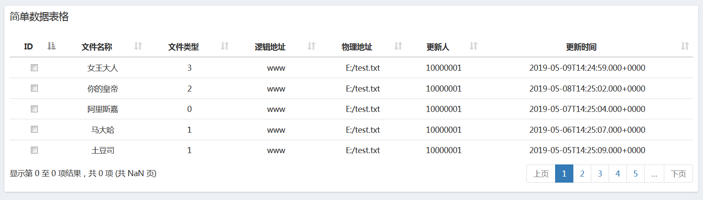
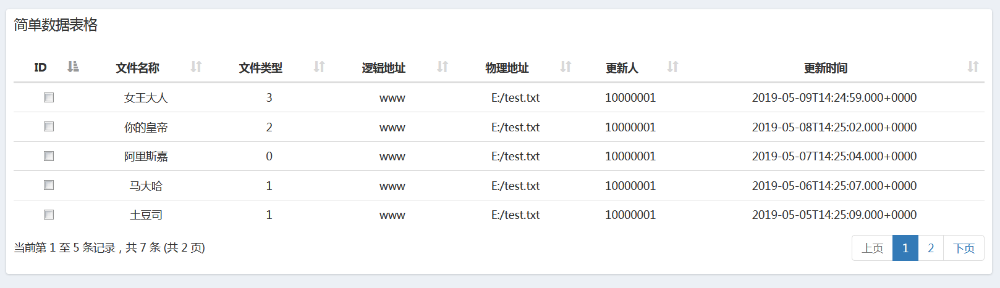
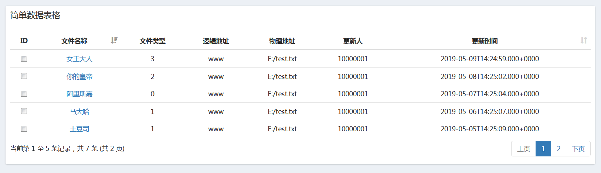

最近闲来无事想研究下数据表格，因为之前接触过layui和bootstrap的数据表格，本着能学多少学多少的学习态度，学习下dataTables的服务端分页配置。特与同学们一块分享下从中遇到的问题和解决方式。
与bootstrap的数据表略有不同，在引入相关js后除了必要的DOM节点（<table id="table" class="table table-responsive table-hover"></table>）外我们还需要表头部分，具体就是bootstrap的整张表格都可以通过js渲染，而dataTables的表头部分需要我们自己在页面添加，就像下面这样：
<table id="table" class="table table-responsive table-hover">
<thead>
<tr>
<th>ID</th>
<th>文件名称</th>
<th>文件类型</th>
<th>逻辑地址</th>
<th>物理地址</th>
<th>更新人</th>
<th>更新时间</th>
</tr>
</thead>
</table>
我以为dataTable的服务端分页会像bootstrap一样，给他一串url，剩下的交给他，于是我写了如下代码进行表格的初始化工作：
<script type="text/javascript" src="static/assets/js/jquery-2.1.0.min.js"></script>
<script type="text/javascript" src="static/assets/libs/datatablejs/jquery.dataTables.min.js"></script><script type="text/javascript">
initTable();
function initTable() {
var language = {"sProcessing": "处理中...", "sLengthMenu": "显示 _MENU_ 项结果", "sZeroRecords": "没有匹配结果", "sInfo": "当前第 _START_ 至 _END_ 条记录，共 _TOTAL_ 条", "sInfoEmpty": "显示第 0 至 0 项结果，共 0 项", "sInfoFiltered": "(共 _MAX_ 页)", "sInfoPostFix": "", "sSearch": "搜索:", "sUrl": "", "sEmptyTable": "表中数据为空", "sLoadingRecords": "载入中...", "sInfoThousands": ",", "oPaginate": {"sFirst": "首页", "sPrevious": "上页", "sNext": "下页", "sLast": "末页"}};
$('#table').DataTable({
'processing': true,
'pageLength': 5, // 每页显示条数
'ajax': '/admin/file/list', //异步请求地址
'lengthChange': false,
'searching': false,
'info': true,
'autoWidth': false, //自动列宽
language: language, //国际化
columns: [{
data: "id" //绑定后台数据列属相
}, {
data: "filename"
}, {
data: 'filetype',
defaultContent: "" //默认值
}, {
data: 'logicadress',
defaultContent: ""
}, {
data: 'physicsadress',
defaultContent: ""
}, {
data: 'modifyUser',
defaultContent: "-"
}, {
data: 'modifyTime',
defaultContent: ""
}],
columnDefs: [{ //自定义首列复选框
targets: [0], //第几列：默认从0开始
orderable: false, // 是否支持排序
render: function (id, type, row, meta) {
return '<input type="checkbox" name="ids" value=' + id + '><label for="input-' + id + '"></label>';
}
}]
})
}
</script>刷新页面结果如下：

咦！！我的数据哪去啦？难道是请求除了问题？
查看控制台，发现请求没问题后台数据也正常接收。
对了，服务端返回数据的格式有问题！！后台数据返回的是自定义JSON，不符合dataTables的默认值规范！！
{"code":"200",
"msg":null,
"data":{
"count":7,
"totalPage":2,
"pageSize":5,
"currentPage":1,
"list":[
{"createUser":null,"createTime":"2019-05-28T14:24:56.000+0000","modifyUser":10000001,"modifyTime":"2019-05-09T14:24:59.000+0000","id":7,"filename":"女王大人","filetype":3,"logicadress":"www","physicsadress":"E:/test.txt","sort":"99"},
{"createUser":null,"createTime":"2019-05-28T14:24:54.000+0000","modifyUser":10000001,"modifyTime":"2019-05-08T14:25:02.000+0000","id":6,"filename":"你的皇帝","filetype":2,"logicadress":"www","physicsadress":"E:/test.txt","sort":"99"},
...
],
"sort":null,
"order":null
}
}我在服务端封装了返回的数据，导致dataTables不知道从哪下手！
在找到问题所在后，结合百老师的各种博客找到了解决的办法：改造‘ajax’属性
$('#table').DataTable({
...
'ajax': {
url: '/admin/file/list',
dataSrc: function (json) {
return json.data.list; //指定返回数据列的位置，该数据列为数组形式
}
},
...
})通过指定数据列的位置，可以实现对后台自定义数据的渲染（通常情况下会保证返回数据的统一格式）:
再次刷新页面数据能正常显示了

嗯，很满意。。但新的问题又出现了：分页出毛病了，再查看控制台发现我一共有7条记录，按理说应该是2页7条
通过百老师的大量博客，发现了问题所在：未开启服务端分页！！
继续改造如下：
$('#table').DataTable({
...
'serverSide': true, // 开启服务端分页
...
)}再次刷新页面，意外发生了，很突然：

出现了意想不到的事情：在开启真正的服务端分页后，我的数据又丢了！！
这次是后台的错误，通过控制台可以发现在开启服务端分页后，dataTables在初始化时向后台传递了很多参数：

可以看到url后面拼接了一连串的字符串，导致后台的SpringMVC在封装参数时出现了问题：
@GetMapping("file/list")
public RestJson page(PageHelper pageHelper) {
System.out.println(pageHelper);
RestJson json = fileRecordService.getFileRecordByPage(pageHelper);
return json;
}PageHelper是我自定义的分页工具类具体代码如下：
public class PageHelper<T> implements Serializable {
private Integer count;//总记录数
private Integer totalPage;//总页数
private Integer pageSize;//每页显示的条数
private Integer currentPage;//当前页
private List<T> list = new ArrayList<T>();//分页之后的数据
private String sort;//排序字段
private String order;//升序或降序
public Integer getCount() {
return count;
}
public void setCount(Integer count) {
this.count = count;
}
public Integer getTotalPage() {
return totalPage;
}
public void setTotalPage(Integer totalPage) {
this.totalPage = totalPage;
}
public Integer getPageSize() {
return this.pageSize == null ? 5 : this.pageSize;
}
public void setPageSize(Integer pageSize) {
this.pageSize = pageSize;
}
public Integer getCurrentPage() {
return this.currentPage == null ? 1 : this.currentPage;
}
public void setCurrentPage(Integer currentPage) {
this.currentPage = currentPage;
}
public List<T> getList() {
return list;
}
public void setList(List<T> list) {
this.list = list;
}
public String getSort() {
return this.sort == "" ? null : this.sort;
}
public void setSort(String sort) {
this.sort = sort;
}
public String getOrder() {
return this.order == "" ? null : this.order;
}
public void setOrder(String order) {
this.order = order;
}
/**
* 计算总页数
*
* @return 总页数
*/
public int countPage() {
int countPage = getCount() / getPageSize();
return getCount() % getPageSize() == 0 ? countPage : countPage + 1;
}
/**
* 从哪条开始取(当前记录数)
*
* @return 当前记录数
*/
public int countOffSet() {
return getPageSize() * (getCurrentPage() - 1);
}
/**
* MYSQL
* 取几条
*
* @return 取几条
*/
public int countMySQLLength() {
return getPageSize();
}
/**
* ORACLE
* 取几条
*
* @return 取几条
*/
public int countOracleLength() {
return getPageSize() * getCurrentPage();
}
@Override
public String toString() {
return "[ " +
"count:" + count +
" totalPage:" + totalPage +
" pageSize:" + pageSize +
" currentPage:" + currentPage +
" sort:" + sort +
" order:" + order +
" ]";
}
}由于SpringMVC封装参数时出现了问题，于是我想能不能在dataTables初始化时自定义后台传递的参数呢？
继续改造‘ajax’属性：
$('#table').DataTable({
...
'ajax': {
url: '/admin/file/list', // url请求
data: function (data) { // 定义初始化参数 :data为向后台发送的参数obj
return $.extend( {},{}, { //自定义参数
"currentPage": data.start/data.length+1, //当前页"pageSize": data.length, // 每页显示条数，data.length='pageLength'属性的值 我设置的是5
} )
},
dataSrc: function (json) {
return json.data.list;
}
},
...
)} 再次刷新页面，数据又回来了

等等，分页是怎么回事？？不打紧，加上这两句：
$('#table').DataTable({
...
'ajax': {
...
dataSrc: function (json) {
json.recordsFiltered = json.data.count; // 指定记录数
json.recordsTotal = json.data.totalPage; // 指定页数
return json.data.list;
}
},
...
})再次刷新页面出现了预期的结果：

调试完毕，发现部分列不应该排序，查看‘columnDefs’属性，发现ID列排序被禁用，但排序图标初始化时依然存在。
添加如下属性：
$('#table').DataTable({
...
'order': [1,'asc'], //修改默认的排序列为第2列、升序
...
})再次刷新页面后正常显示，能不能实现指定列排序呢？
修改代码如下（为了使代码更简洁我将‘columnDefs’属性中的代码转移到‘columns’属性中）：
$('#table').DataTable({
...
columns:[{ // 合并后的columns
data: "id", // 绑定后台数据列的属性
sortable: false, // 禁止排序
render : function(id, type, row, meta) { // 将数据进行DOM转换
return '<input type="checkbox" name="ids" value=' + id + '><label for="input-' + id + '"></label>';
}
},{
data: "filename",
render : function(id) {
return '<a href="javascript:;">'+id+'<a/>';
}
},{
data: 'filetype',
defaultContent : "",
sortable: false,
},{
data: 'logicadress',
defaultContent : "",
sortable: false,
},{
data: 'physicsadress',
defaultContent : "",
sortable: false,
},{
data: 'modifyUser',
defaultContent : "-",
sortable: false,
},{
data: 'modifyTime',
defaultContent : ""
}]，
...
})刷新页面后效果如下：

点击排序发现没有反应。后台的排序已经实现了，前台只要发送相应的参数即可。
继续修改代码如下：
$('#table').DataTable({
...
'ajax': {
...
data: function (data) {
console.log(data);
return $.extend( {},{}, {
"currentPage": data.start/data.length+1,
"pageSize": data.length,
"order": data.order[0].dir, //升序或降序：随鼠标点击发生变化
"sort": data.order[0].column==1?"fileName":"modifyTime" //获取排序列：下标从0开始，1代表第二列（因为只有两列参与排序，所以简单写了）
} )
},
...
},
...
})刷新页面，打开控制台，我们看下‘data’的结构：
{
"draw": 1,
"columns": [
{
"data": "id","name": "","searchable": true,"orderable": false,
"search": {"value": "", "regex": false}
},
...
],
"order": [{"column": 1,"dir": "asc"}],
"start": 0,
"length": 5,
"search": {"value": "","regex": false}
}一个标准的json对象，现在回头看看这两行代码是不是有种恍然大悟的感觉：
"order": data.order[0].dir,
"sort": data.order[0].column==1?"fileName":"modifyTime"后台的分页和排序代码无须赘述，本文主要是分享在使用dataTables时如何自定义前后台参数问题，其实使用起来和bootstrap的数据表格有很多相似的地方，感觉还是后者更简单一些。咸鱼水平，不足之处欢迎指正！